최귀향 할머니는 논 가장자리에 전동스쿠터를 세우려다 그대로 논에 빠졌다
그날도 최귀향 할머니는 늘 다니던 길을 가고 있었다. 논 가장자리에 의료용 전동스쿠터를 세우려던 참이었는데, 멈춰야 한다고 생각하면서도 레버를 놓지 못했다.
논 가세 세우려고 했어. 거기서 딱 세워야 된다고 생각하고 있었지. 근데 나도 모르게 손에 힘이 들어가더라고. 세우려면 놔야 되는데, 그걸 꽉 쥐어버린 거야. 그러니까 전동차가 멈추는 게 아니라 앞으로 가버렸어. 그대로 논에 빠졌지. … 자전거는 잡으면 서잖아. 근데 이건 잡으면 막 가니까.
최귀향 할머니할머니는 사고가 난 뒤에도 전동스쿠터를 다시 타고 집에 갔다. 뒤늦게 병원에 가서야 갈비뼈와 발가락이 부러진 것을 알았고, 119 구급차에 실려 안동의 큰 병원으로 옮겨졌다.
이런 사고가 왜 나는지 물으면 사람마다 답이 달랐다.
"조작 때문에 사고 난 거라고 단정하기는 어렵습니다. 전동차를 늦게 발견하거나 못 보는 경우도 많아요."
의성경찰서 교통관리계
"당황하거나 놀라시면 손을 안 놓으셔서 사고 나는 경우가 많아요."
안동의 의료기기점 사장님
"갑작시레 깜짝 놀라가꼬 헷갈리가꼬, 놔야 되는데 꽉 쥐아삣어."
E 어르신, 88세, 전동스쿠터를 탄 지 5년째에 사고
우리는 이런 사고가 정말 어르신 한 사람의 실수인지 확인하고 싶었다. 그래서 의성에서 전동스쿠터를 타는 어르신 49명을 찾아가 사고 이야기를 들었다.
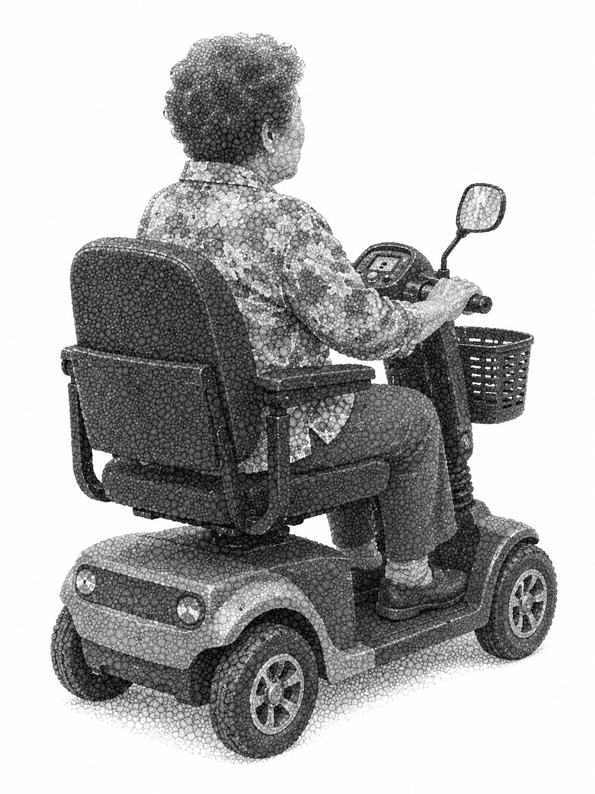
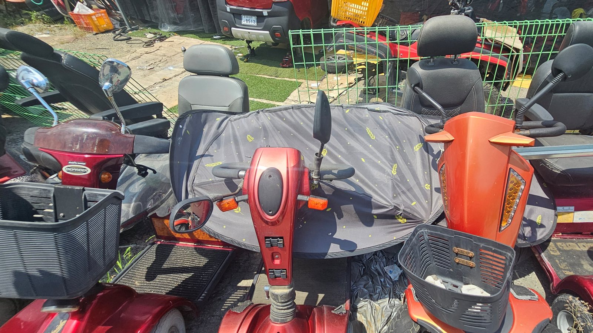
경찰도 119도 몰랐던 사고 원인을 의료기기점 사장님들은 알고 있었다
- 의성 도착
- 안동의 의료기기점
- 어르신 49명 인터뷰
의성의 이동 문제를 찾으려고 3주를 돌아다녔지만, 손에 잡히는 문제가 없었다
2025년 6월 26일, 우리 넷이 의성에 도착했다. 지역 소멸 문제를 풀고 싶은 사람도, 사회 분야 진로를 찾는 사람도, 시골에서 살아 보고 싶은 사람도 있었다. 우리는 의성 어르신들이 실제로 겪는 이동 문제를 함께 찾기로 했다. 인터넷에서 검색하면 나오는 뭉뚱그린 문제 말고, 우리 손으로 풀 수 있을 만큼 작고 구체적인 문제를 찾고 싶었다.
팀 이름은 RE:MOVE라고 지었다. 어르신들이 다니는 길에서 장벽을 없애고(remove), 이동이 어려운 어르신들이 다시 움직이게(re-move) 하겠다는 뜻이다.
도시에서만 살아온 우리는 의성도, 어르신도, 이동권도 잘 몰랐다. 그래서 무작정 사람들을 만나러 나섰다. 어르신들이 주로 움직이는 오전에 보건소, 우체국, 마트, 시장, 병원, 복지관을 가리지 않고 다녔다. 도동3리 마을회관에서는 풀을 뽑고 청소를 거들며 얼굴을 익혔다. 3주쯤 지나자 어르신들과 이야기하는 것이 편해졌고 사투리에도 귀가 트였다.
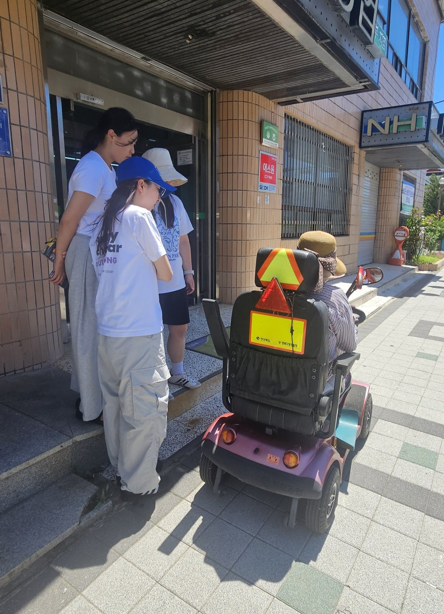
그래도 문제는 보이지 않았다. 처음에는 행복버스와 행복택시, 그리고 재난을 겪은 주민들이 어떻게 다니는지를 살펴봤지만, 예상한 문제는 찾지 못했다. 시간은 가는데 갈 길이 보이지 않던 어느 날, 한 팀원이 의문을 제기했다. 길가에 세워 둔 차에 가리면, 차체가 낮은 의료용 전동스쿠터를 운전자가 못 볼 수도 있다는 것이었다. 우리는 이 의문을 계기로 전동스쿠터를 조사하기 시작했다.
의성노인복지관 앞에는 전동스쿠터가 승용차처럼 줄지어 서 있었다
사실 전동스쿠터는 의성에 온 지 1주일도 안 된 7월 2일, 의성노인복지관에 갔을 때 처음 눈에 들어왔다. 시골 어르신들이 전동스쿠터를 많이 탄다는 것은 알았지만, 복지관 앞에 승용차처럼 줄지어 세워 둔 모습은 처음 봤다. 그 뒤로는 마을회관, 오일장, 읍내 인도와 차도 어디서나 전동스쿠터가 눈에 띄었다. 타는 어르신들은 전동스쿠터를 아꼈다.
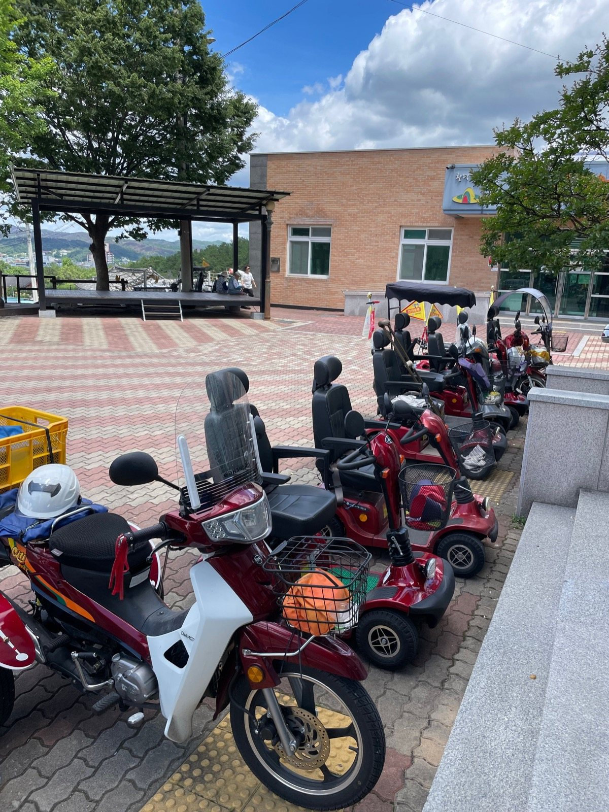
"예, 타는 게 좋아요. 그 얼마나 편리한지 몰라요."
전동스쿠터를 타는 어르신
"그거 뭐 제일 쉬운 게 뭐 전동차인데, 뭐. 자전거는 못 타도 그거는 뭐 대번 되더라고."
전동스쿠터를 타는 어르신
그런데 기사에서는 전동스쿠터가 위험하다는 이야기가 많았다. 2024년 7월 26일 기사에는 그해 들어 의성군 교통사고 사망자 12명 가운데 6명이 노인 전동차나 이륜차 사고로 숨졌다는 의성경찰서 집계가 실려 있었다.
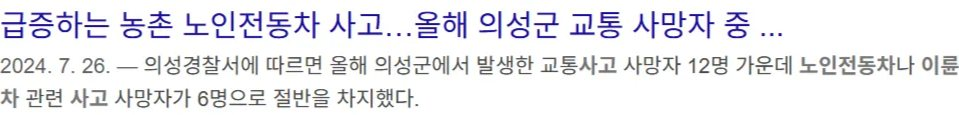
우리는 승용차를 모는 사람은 전동스쿠터를 어떻게 보는지 들어 보려고 도동3리 노인회장 서상우 어르신을 만났다. 장애인협회에서 활동한 적이 있는 분이다. 어르신은 길가 주차 말고도 인도에 쌓아 둔 물건, 운전 교육이 없는 것, 중고 전동스쿠터 거래까지 이용자를 위험하게 하는 일이 많다고 알려 주었다. 살펴볼 문제가 한꺼번에 늘어났다.
안동의 의료기기점 5곳 가운데 4곳에서, 어르신들이 놀라면 레버를 놓지 못해 사고가 난다는 말을 들었다
어디부터 파고들지 정하려고, 전동스쿠터 사고를 가까이서 볼 만한 사람들부터 만나 보기로 했다.
전동스쿠터를 팔고 만든다
교통과 안전을 맡는다
도로에서 전동스쿠터를 자주 마주친다
사고가 나면 먼저 달려간다
가장 먼저 안동의 의료기기점을 찾아갔다. 의성에는 큰 의료기기점이 거의 없어서, 어르신들은 주로 안동에서 전동스쿠터를 산다. 처음 들른 '메디카'에서, 어르신들에게 운전을 가르칠 때 특히 신경 쓰는 것이 있는지 여쭤보았다.
레버를 잡으면 앞으로 가고, 놓으면 멈추는 방식인데 당황하거나 놀라시면 손을 안 놓으셔서 사고 나는 경우가 많아요. 그래서 멈추려면 손을 꼭 놓으셔야 한다고 말씀드리죠.
안동 의료기기점 '메디카' 사장님자료 조사에서도, 그때까지 한 인터뷰에서도 한 번도 나오지 않은 이야기였다. 안동의 다른 의료기기점 4곳에도 같은 질문을 했고, 메디카를 포함한 5곳 가운데 4곳에서 같은 답을 들었다.
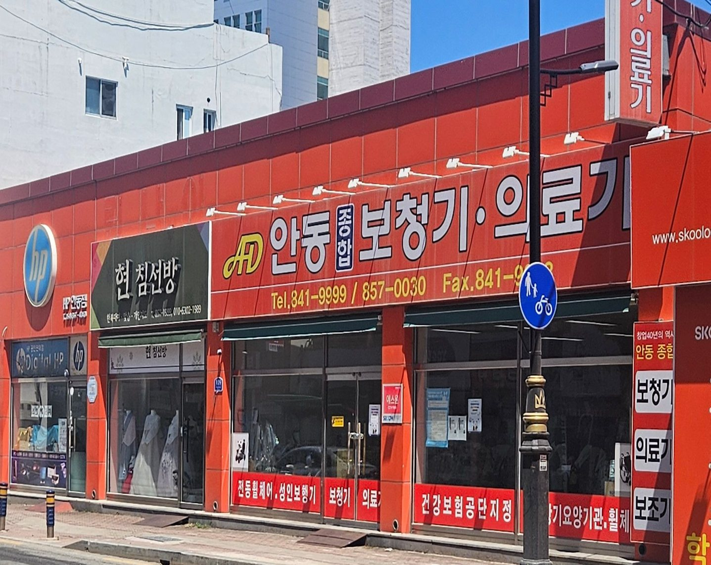
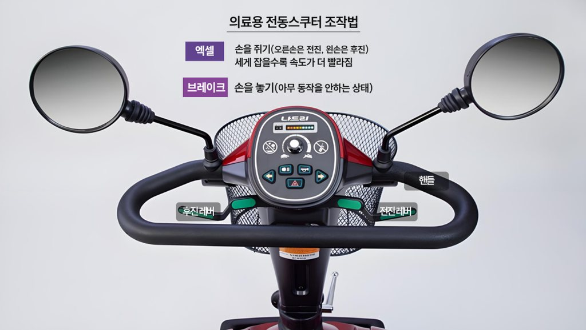
오조작은 멈춰야 할 때 가속 레버를 놓지 못하고 계속 잡고 있는 것이다. 오조작 사고는 오조작 때문에 일어난 사고다.
그런데 경찰서, 파출소, 119, 버스와 택시 기사, 구난차 업체에서는 오조작 이야기를 한 번도 듣지 못했다.
다들 전동스쿠터가 위험하다고만 했다. 우리가 고른 문제가 맞는지 불안해졌다. 확인하려면 어르신들에게 직접 물어보는 수밖에 없었다.
"사고 나신 적 있으세요?"라는 질문을 바꾸자 어르신들이 사고 이야기를 꺼냈다
처음 10명쯤 만났을 때는 막막했다.
- '사고'를 보는 기준이 달랐다. 우리는 가볍게 부딪치거나 넘어진 것도 사고로 봤지만, 어르신들은 크게 다쳐야 사고라고 여겼다.
- 전동스쿠터 타는 분을 만나기 어려웠다. 어르신들은 대부분 가장 빠른 속도로 달려서, 자전거를 타고 쫓아가야 겨우 말을 붙일 수 있었다.
- 사투리를 알아듣기 힘들었다. 일상 대화는 괜찮았지만 사고가 어떻게 났는지 자세히 들을 때는 놓치는 말이 많았다.
그래서 물어보는 말을 바꿔 보았다.
그러자 사고 난 적 없다며 손사래를 치던 어르신들이 그때 일을 자세히 들려주기 시작했다.
어르신들을 만나는 곳도 바꾸기로 했다. 전동스쿠터를 쫓아다니는 대신 마을회관과 노인복지관처럼 어르신들이 모이는 곳을 찾아갔고, 양갱을 들고 경로당을 돌기도 했다. 전동스쿠터를 더 많이 탈 것 같은 면 지역에는 두 명씩 나눠서 나갔다. 사투리는 대구 출신 팀원이 돌아가며 짝이 되어 말이 막힐 때마다 풀어 주었다.
들은 이야기를 빠짐없이 기록하려고 사고 조사서도 만들었다. 사고 경험과 함께 운전 교육을 받았는지, 면허가 있는지, 전동스쿠터를 몇 년째 타는지, 다른 탈것을 몰아 본 적이 있는지, 주로 어디를 다니는지, 사고가 어디서 나서 얼마나 다쳤는지까지 물어보았다.
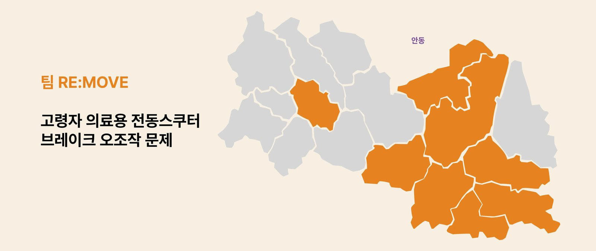
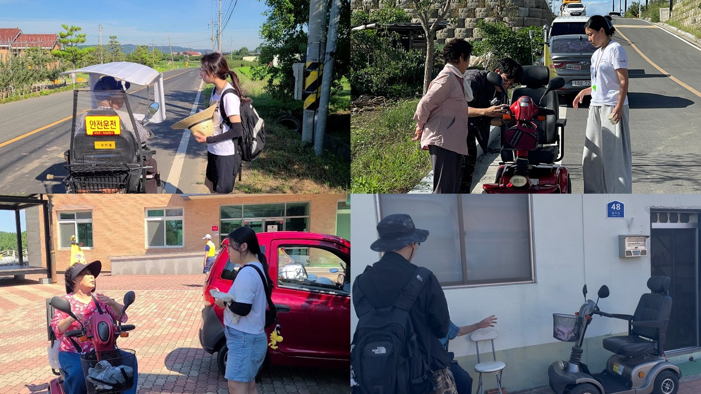
의성의 여름은 뜨거웠다. 전동스쿠터 판매원으로 오해받는 일도 잦았고, 낯선 사람을 경계하는 눈길도 종종 받았다. 그래도 인터뷰를 그만둘 수 없었다. 전동스쿠터가 어르신에게 어떤 물건인지, 타고 어디에 가는지, 사고가 났는데도 왜 계속 타는지는 어르신들만 알려 줄 수 있었다.
그렇게 3주 동안 어르신 49명을 만났다.
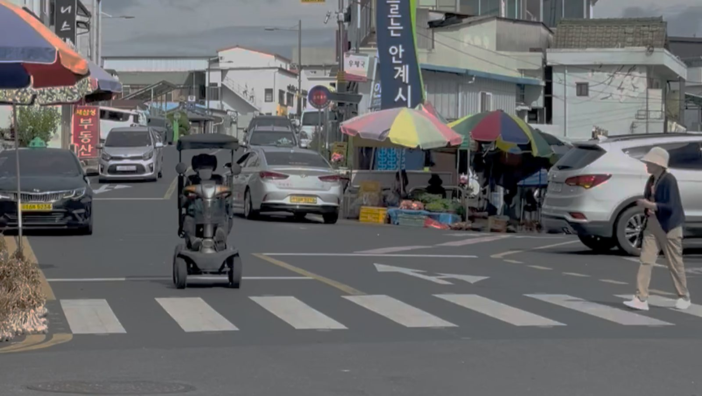
놀란 어르신들은 레버를 놓지 못했다
- 조사 결과
- 사고가 나는 이유
- 사고 뒤의 이동
어르신 49명 가운데 22명이 사고를 겪었고, 그중 12명은 레버를 놓지 못해 사고가 났다
우리가 만난 49명 중 40명이 여성이고, 30명이 면 지역에 산다. 의성군은 넓고 마을이 흩어져 있다. 병원과 시장에 가려면 탈것이 꼭 있어야 한다.
38명은 자동차나 오토바이 면허가 없었다. 법에서는 의료용 전동스쿠터를 탄 사람을 보행자로 본다. 그래서 면허 없이도 탈 수 있다. 17명은 전동스쿠터를 타기 전에 다른 탈것을 몰아 본 적이 없었으니, 이분들에게 전동스쿠터는 생애 첫 탈것이다. 운전 경력을 답한 48명 가운데 46명이 1년 넘게 탔고, 10년 넘게 탄 분도 13명이었다.
의료용 전동스쿠터를 타는 어르신 49명을 만났다.
49명 가운데 22명이 전동스쿠터 사고를 겪었다.
사고를 겪은 22명 가운데 12명은 레버를 놓지 못해 사고가 났다.
사고까지 가지는 않았지만 레버를 놓지 못한 적이 있는 어르신도 4명 있었다. 레버를 놓지 못한 어르신은 모두 16명이다.
오조작을 겪은 16명 가운데 70대 이상이 13명, 그중 면에 사는 분이 8명이다. 8명 중 4명은 다른 탈것을 몰아 본 적이 없고, 4명 모두 여성이다.
전동스쿠터 말고는 다른 탈것을 몰아 본 적이 없는 할머니들도 레버를 놓지 못한 적이 있었다.
사고를 겪은 어르신의 절반이 넘는 12명이 레버를 놓지 못해 사고가 났다. 의료기기점 사장님들의 말은 몇몇 어르신에게만 해당하는 이야기로 보기 어려웠다.
레버를 놓지 못한 16명 가운데 12명이 실제로 어딘가에 부딪쳤다. 운 좋게 피한 사람보다 부딪친 사람이 세 배 많았다.
사고는 집 앞과 시장과 농로처럼 매일 다니는 길에서 났다
오조작 사고 12건 가운데 집 앞, 시장, 농로에서 각각 3건이 났고, 차도에서 난 사고는 1건이었다. 나머지 2건은 장소를 확인하지 못했다. 좁은 농로와 집 앞 골목에서는 레버를 잠깐만 세게 잡아도 벽이나 기둥에 부딪친다. 시장에서는 사람이 많아 정신이 없다. 멈춰야 하는 순간에 레버를 놓기도 그만큼 어렵다.
"장에 사람이 많으니까 정신머리가 하나도 없어가 멈춘다카는걸 그냥 꽉 쥐아삣어. 그래가꼬 좌판 다 밀어삣다"
D 어르신, 83세, 시장에서
"내는 시골 살아가 맨날 농로로 댕기지. 근데 농로라 좁아. 정신머리 놓고 있다가 냅다 들이박아삣다"
H 어르신, 80대, 농로에서
"후진 하다가 멈춰야 되는데 꽉 잡아삐서 마늘가게 기둥에 박았다"
K 어르신, 84세
"장에서 꽉 잡아삐서 사람한테 박아삣다. 발도 낑기고.. 합의금 물어줬어"
B 어르신, 80대, 시장에서
"집에 다 와가 세울라다가 꽉 잡아삐는 바람에.. 냅다 들이박아삐서 앞이 좀 뿌사짓어"
I 어르신, 81세, 집 앞에서
12건 가운데 9건은 다른 사람과 부딪치지 않고 혼자 난 사고였고, 대부분 벽이나 기둥 같은 구조물에 부딪쳤다. 전동스쿠터 앞이 부서지거나 가게 기둥에 부딪친 정도로 끝난 사고도 있었지만, 장에서 사람을 친 어르신은 합의금을 물어 주었고, 뼈가 부러져 119에 실려 간 분도 있었다.
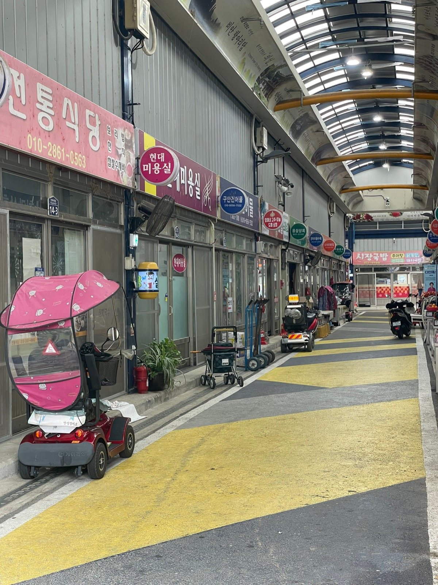
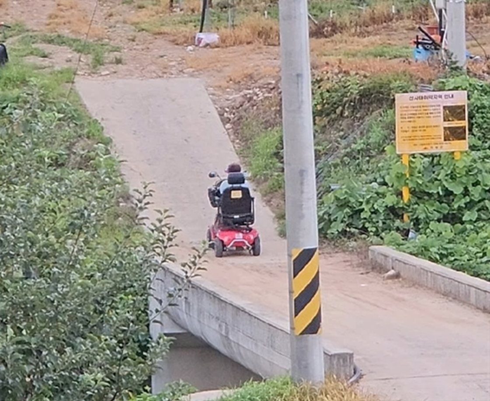
전동스쿠터를 5년, 10년 탄 어르신도 사고를 겪었다
우리는 사고가 전동스쿠터를 막 타기 시작한 때에만 날 거라고 예상했다. 사고가 난 때를 확인한 9건 가운데 4건은 탄 지 1년이 안 됐을 때 났지만, 1년 넘게 탄 뒤에 난 사고도 5건이었다. 프롤로그의 E 어르신은 탄 지 5년째에 사고를 겪었고, 10년째 타다가 사고를 겪은 어르신도 있었다.
논두렁 가에 세울라캤는데 그냥 꽉 쥐어가꼬 논에 팍 빠져삣어. 왜 그랬는가 몰라..
C 어르신, 82세, 전동스쿠터를 탄 지 10년째에 사고사고 이유를 물으면 어르신들은 "정신머리가 없어서"라고 답했다. "정신머리 있는 사람만 전동스쿠터 탈 수 있다"는 말도 들었다. 어르신들은 사고를 자기 탓으로 여기고 있었다.
어르신들이 말한 '정신머리'는 나이가 들면서 누구나 조금씩 무뎌지는 주의력과 순발력에 가까웠다. 오래 탄 어르신도 사고를 겪은 것을 보면, 운전 실력보다는 이런 변화 때문인 듯했다. 의료용 전동스쿠터는 원래 장애인이 쓰도록 만든 의료기기다. 지금은 어르신들이 많이 타지만, 나이가 들면서 생기는 이런 변화를 고려한 장치는 달려 있지 않았다.
놀라면 손에 힘이 들어가는데, 전동스쿠터는 레버를 놓아야 멈춘다
의료용 전동스쿠터는 손잡이 아래 레버를 살짝만 잡아도 나가고, 놓으면 멈춘다. 평소에는 편하고, 손만 놓으면 멈추니 안전하다. 문제는 놀랐을 때 생긴다. 사람은 놀라거나 당황하면 몸에 힘이 들어간다. 그 순간 어르신은 레버를 더 세게 잡고, 전동스쿠터는 더 빨리 나간다.
갑작스러운 일이니 주먹을 쥐게 되지, 주먹을 피게 안된다고.
의성읍 도동3리 노인회장어르신들이 들려준 사고를 시간 순서대로 정리해 보니, 대부분 같은 8단계를 거쳤다
- 주의가 흩어지거나 집중이 떨어진다.
- 무의식적으로 전진 레버를 잡는다.
- 전동스쿠터가 움직인다.
- 당황하고 놀란다.
- 한꺼번에 여러 일이 벌어져 정신이 없어서, 자기가 레버를 잡고 있다는 것을 알아채지 못한다.
- 레버에서 손을 놓지 못한다.
- 겁에 질려 몸이 굳는다.
- 사고가 난다.
놀란 어르신이 전동스쿠터를 멈추려면, 그 짧은 순간에 '손을 펴야 한다'는 판단까지 해내야 한다. 우리는 사고의 원인을 어르신의 부주의보다 이 조작 방식에서 찾았다. 더 조심하라고 해서는 막기 어렵고, 놀란 순간에도 사고를 막아 줄 장치가 있어야 한다고 봤다.
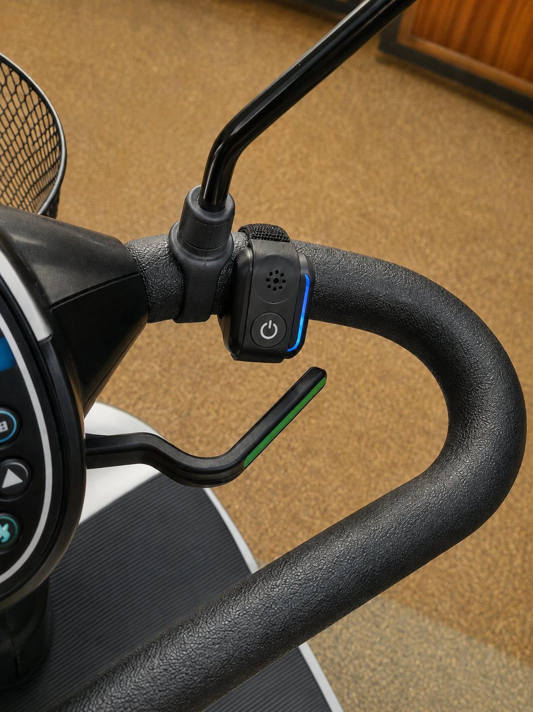
어르신들은 사고를 겪고도 병원과 시장에 갈 때 전동스쿠터를 계속 탔다
사고가 난 뒤에도 어르신들은 병원과 시장에 갈 때 전동스쿠터를 탔다.
그거 없으면 꼼짝도 못해. … 시간으로 보면 딸보다도 낫고 아들보다도 나아.
이순자 어르신"걸어가려 하면 못 가고. 전동차 타믄 갈 수 있지. 시장에나 가고, 약 타러 갈 때도…"
김옥자 어르신
사고를 겪은 뒤에는 다니는 길도 달라졌다. 사고가 난 길을 지날 때마다 그때 일이 떠오르고, 가족은 큰길에 나가지 말라고 말린다.
"그 길 가면 만날 생각나요. '왜 그랬지'… 그때 일이 자꾸 떠오르는 길이 되는 거야."
김태선 어르신
"사고가 해마다 는다고… 아들도 겁을 줘서 중앙도로는 못 나가. 무조건 택시 타라 그래."
이순자 어르신
전동스쿠터 말고는 혼자 다닐 방법이 없는 어르신은 큰길에 못 나가면 갈 수 있는 곳도 그만큼 줄어든다. 우리가 인터뷰한 한 경찰관은 어린이 안전에는 모두가 관심을 두는데 고령자 안전에는 경찰 말고 관심을 두는 사람이 없다고 했다. 사회가 관심을 가져야 이 문제가 풀린다는 말도 덧붙였다.
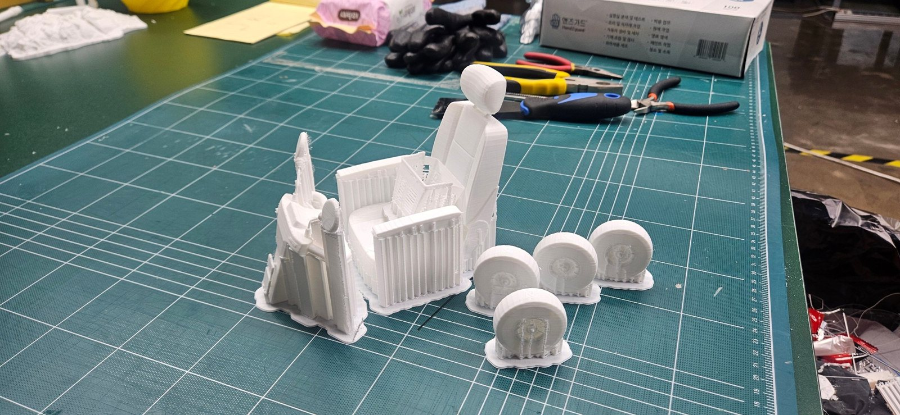
3D 프린터로 장치를 만들어 어르신들과 시험했다
- 다섯 번의 시도
우리는 어르신들을 가르치기보다 전동스쿠터에 다는 장치부터 만들기로 했다
어르신 대부분은 오조작 사고를 알고 있었지만 고쳐야 할 문제로 여기지는 않았다. 교육이나 캠페인은 어르신이 마음먹고 습관을 바꿔야 효과가 나는데, 그러기는 어렵다고 봤다. 그래서 전동스쿠터에 다는 장치부터 만들기로 했다. 팀원 대부분이 기계공학을 공부한 적이 없어서, 3D 프린터 쓰는 법부터 익혀야 했다.
- 오조작 사고를 실제로 막을 수 있어야 한다.
- 지금 타는 전동스쿠터에 그대로 붙일 수 있어야 한다.
- 어르신이 새로 익혀야 할 것을 늘리지 않아야 한다.
의성 어르신들이 많이 타는 케어라인의 '나드리'를 기준으로 삼았다. 서울 노원구와 관악구의 전동보장구 운전연습장에서 나드리를 직접 타 보고 조작부 치수를 쟀다. 정규 활동 동안 안심손, 스마트레버지킴이, 골든타임 가드를 만들었다. 후속 연구에서는 스마트레버지킴이를 조작부에 붙이기만 하는 장치로 다시 설계하고, 가위손 기법을 시험했다.
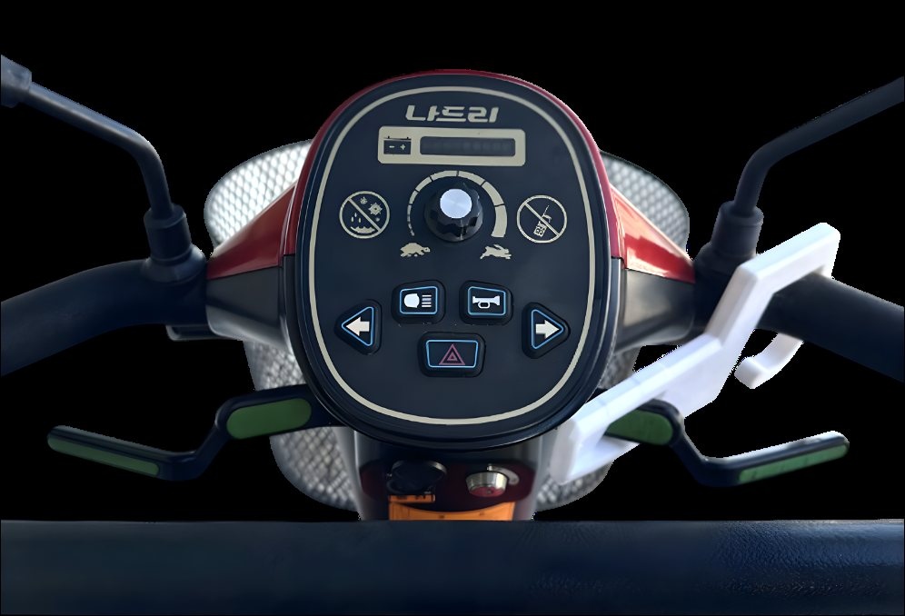
레버를 끝까지 당기면 손끝에 걸리게 했지만, 자극이 약했고 후진이 안 되는 결함까지 나왔다
어르신이 레버를 끝까지 잡은 줄 몰라서 사고가 난다고 봤다. 그래서 레버를 끝까지 당기면 손잡이에 단 하얀 장치가 턱 걸리면서 손끝에 한 번 더 자극을 주게 했다. 오조작이라면 어르신이 그 자극을 느끼고 반사적으로 손을 놓으리라고 기대했다.
노원구 연습장에서 치수를 재고, 의왕시 메이커스페이스에서 3D 프린팅을 배워 1차 시제품을 만들었다. 관악구 연습장에서 직접 달아 보고 고칠 점을 찾아, 의성 G타운 메이커스페이스에서 2차 시제품을 뽑았다. 도동3리 마을회관 앞에 코스를 만들고, 어르신들이 놀랄 만한 상황을 연출해 시험했다.
어르신들은 손끝 자극을 생각만큼 분명하게 느끼지 못했고, 어르신이 스스로 알아채고 손을 놓기를 기대하기 어려웠다. 안심손을 달면 후진이 안 되는 결함까지 나와서 개발을 그만두었다. 일부러 놀라게 해서 오조작이 일어나게 하기도 어려워서, 장치를 시험하는 방법부터 다시 생각해야 했다.
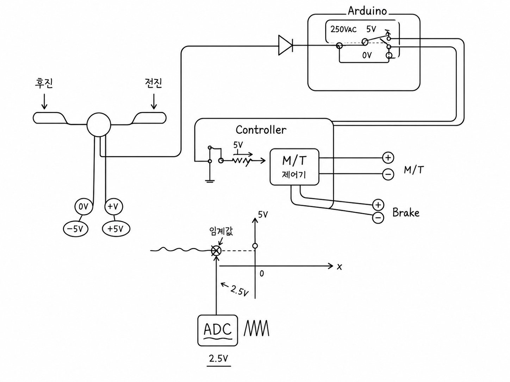
레버를 너무 빨리 당기면 전원을 끊도록 회로를 짰지만, 인증과 반동 문제에 막혔다
안심손이 실패한 뒤에는 어르신이 알아채기를 기다리지 않고, 전동스쿠터가 오조작을 감지해 멈추게 하는 방법을 찾아보기로 했다. 고령 운전자가 많은 일본에서는 지금 타는 자동차에 덧붙이는 오조작 방지 장치가 널리 쓰이고, 국내 모빌리티 회사도 비슷한 장치를 시범으로 쓰고 있었다.
자동차용 오조작 방지 장치는 가속 페달을 0.25초 만에 끝까지 밟으면 오조작으로 판단한다. 우리는 이 기준을 그대로 가져오지 않고, 의성 어르신들이 레버를 얼마나 빨리 잡는지 직접 재기로 했다. 의료기기점에서 조작부를 사서 아두이노로 레버의 전압 변화를 기록했고, 0.7초 안에 레버를 끝까지 당기면 오조작으로 보고 전원을 끊도록 회로를 짰다.
기업과 교수님께 문의했지만 답을 받기 어려워서, 기계공학과 학부생들에게 기술적으로 가능한지 확인받았다. 제어 로직은 의왕시 메이커스페이스 전문가의 도움을 받아 설계했다.
의료용 전동스쿠터는 식약처 고시에서 2등급 의료기기로 분류된다. 차체 안에 회로를 연결하면 의료기기를 개조하는 셈이 되어 인증을 다시 받아야 한다. 달리던 전동스쿠터가 갑자기 멈추면 탄 사람이 반동으로 튕겨 나갈 위험도 있었다.
LG전자 연구원은 회로 하나를 더하는 수준으로는 안 되고, 제조사가 설계 단계부터 안전 로직을 함께 넣어야 한다고 조언했다. 별따러가자 김경목 대표는 방향이 신선하다면서도, 전동스쿠터의 제어 장치(ECU)까지 건드리면 의료기기를 개조하는 일이라 오래 검증해야 한다고 했다.
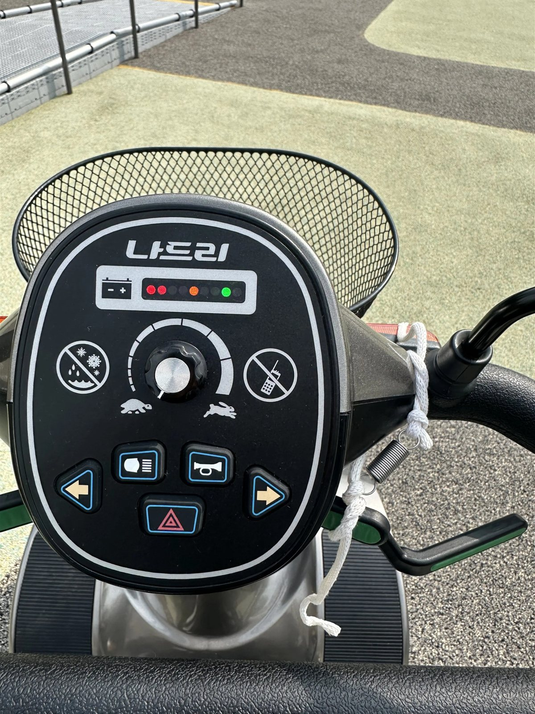
레버를 60% 넘게 당기면 뻑뻑해지게 만들어, 잘못 잡아도 천천히 빨라지게 했다
골든타임 가드는 전기 장치를 건드리지 않고 사고의 피해를 줄이는 장치다. 전동스쿠터를 직접 타 보니 레버가 너무 헐거워서 손가락 힘만으로도 끝까지 당겨졌다. 그래서 레버를 60% 넘게 당기면 그때부터 힘이 더 들게 만들었다. 잘못 잡아도 천천히 빨라지니 사고가 나는 순간을 늦추고 부딪치는 힘도 줄일 수 있다고 봤다.
1차 시제품은 몸에서 먼 쪽 손잡이와 레버 사이에 용수철을 걸어, 당기는 힘에 저항하게 했다. 관악구 연습장에서 써 본 분들은 장치가 단단히 고정되지 않아 불편하다고 했고, 쓰다 보니 용수철이 늘어나 모양이 변했다. 2차 시제품에서는 용수철을 몸 쪽 손잡이로 옮겨 달고, 용수철을 누를 때 생기는 저항을 이용했다.
레버를 놓지 못한 순간부터 위험한 곳에 닿기까지, 가드를 단 전동스쿠터는 0.89초가 더 걸렸다
우리는 2차 시제품을 달고 직접 주행 실험을 해 보았다. 오조작이 시작된 곳에서 위험한 곳에 닿기까지 걸린 시간을 쟀다. 어르신이 손을 놓거나 옆 사람이 말릴 수 있는 시간이다.
가드 없이 5.77초 걸리던 거리가 6.66초 걸렸다. 위험한 곳에 닿기까지의 시간이 약 15.4% 늘었다.
1초 가까운 시간을 더 벌면 어르신이 손을 놓거나 옆 사람이 말릴 수 있다. 천천히 빨라지는 만큼 부딪칠 때의 힘도 줄어들 것으로 예상한다.
의성에 내려가 어르신들에게도 시험해 보았다. 시제품을 달아 본 어르신 5명 가운데 4명이 마음이 놓인다고 했고, 어르신들의 보호자 4명 가운데 3명이 필요하다고 답했다.
"놔야 멈추는데, 잡고 있어서 사고 날 때 있지. 이거 있으면 확실히 도움 될 것 같아."
김옥자 어르신
"확 잡아도 바로 훅 나가는 느낌이 덜해서 마음이 놓이더라"
의성읍 김OO 어르신
이 어르신은 타다가 장치가 한 번 떨어졌다며, 오래 쓰려면 단단히 고정해야 한다고 했다. 1주일쯤 달고 다녀 본 어르신 몇 분은 오조작은 막을 수 있겠지만 평소에 빨리 달릴 때는 거슬린다고 했다.
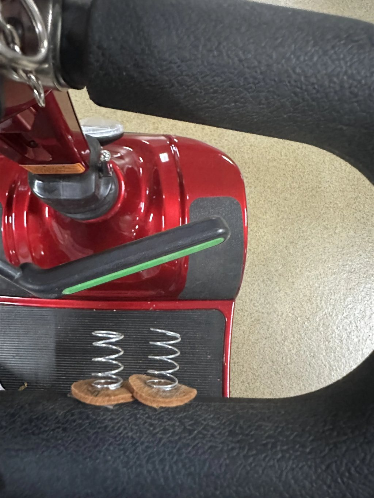
평소에는 그대로 쓰다가 급하게 당길 때만 저항이 생기게 할 방법을 고민했다. 유튜브 '대충라이프'를 운영하는 LG전자 연구위원을 찾아가 물었더니, 자동차 부품인 댐퍼를 쓰면 천천히 당길 때는 지금처럼 움직이고 빠르게 당길 때만 저항이 커지게 만들 수 있다고 했다. 기아자동차 관계자도 자동차에 들어가는 부품으로 충분히 가능하다고 답했다. 다음에는 댐퍼를 단 골든타임 가드를 시험할 계획이다.
차체를 건드리지 않고 진동과 소리로 알리는 장치를 설계했지만, 오조작을 가려낼 기준부터 필요했다
후속 연구에서는 차체에 회로를 넣지 않고 조작부에 붙이기만 하는 장치로 스마트레버지킴이를 다시 설계했다. 레버를 급하게 당기면 진동과 소리로 바로 알린다. 회로를 차체 안에 연결하지 않으니 1안보다 적용하기 쉽다.
경희대 Age-Tech 연구소의 도움을 받아 이 장치를 이어서 만들려 했다. 1안에 쓴 0.7초는 우리가 의성에서 직접 잰 값이었지만, 장치에 넣으려면 여러 어르신이 레버를 잡는 속도를 재서 기준을 검증해야 했다.
경희대 Age-Tech 연구소와 계획을 세워 보니, 레버를 당기는 속도를 재는 장치부터 만들고, 그 장치로 어르신들의 레버 조작을 잰 다음, 잰 값으로 스마트레버지킴이를 만들어야 했다. 단계 하나하나가 큰 연구여서 남은 후속 연구 기간 안에 다 끝낼 수 없었다.
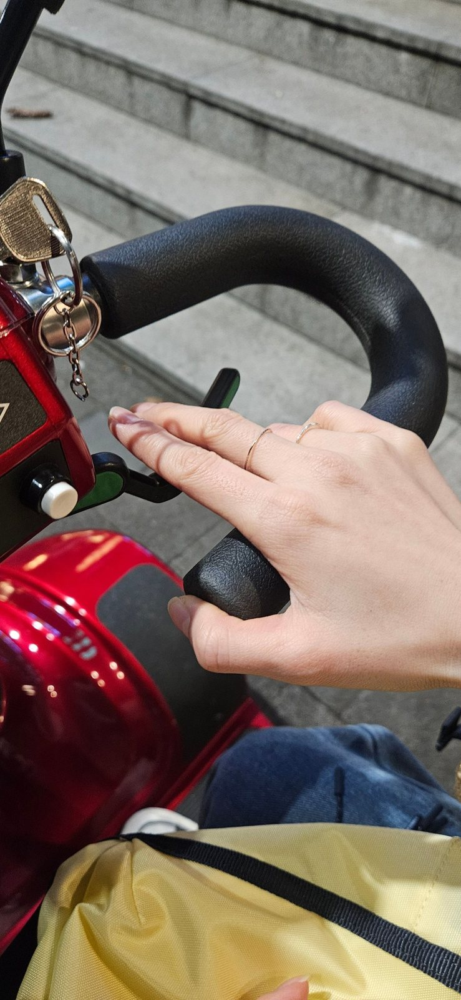
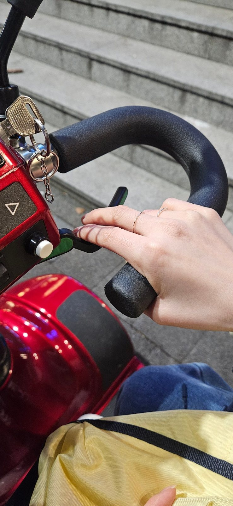
두 손가락으로 레버를 잡는 습관을 가르치려 했지만, 효과를 확인할 방법이 없었다
장치를 끝까지 완성하기에는 공학 지식이 모자랐다. 그래서 후속 연구에서는 운전하는 손 모양만 조금 바꾸는 방법을 찾아보았다. 어르신들이 네 손가락으로 레버를 움켜잡는 대신 두 손가락으로 나눠 잡도록 현장에서 가르쳐 보기로 했다. 그러면 레버를 급하게 끝까지 당기는 일이 줄어들 것이라고 봤다.
오조작 사고를 실제로 연출할 수 없어서 효과를 확인하지 못했다. 경희대 Age-Tech 연구소는 어르신들에게 바로 권하기 전에 안전한 곳에서 먼저 관찰하고 비교해 봐야 한다고 했다. 어르신마다 손 기능이 다르기 때문이다.
해결책을 현장에 내놓으려면 생각해 내고, 만들고, 효과를 확인하고, 널리 퍼뜨리는 일을 차례로 해야 한다. 다섯 번을 시험하면서 우리는 한 단계가 쉬워 보여도 다른 단계에서 막힐 수 있다는 것을 알게 됐다.
가위손 기법은 만들기는 쉬웠지만 효과를 확인할 수 없었다. 스마트레버지킴이는 원리는 분명했다. 하지만 1안은 차체 안에 회로를 넣어야 했고, 2안은 오조작을 가려낼 기준부터 정해야 했다. 골든타임 가드는 만들어서 시험까지 해 보았다.
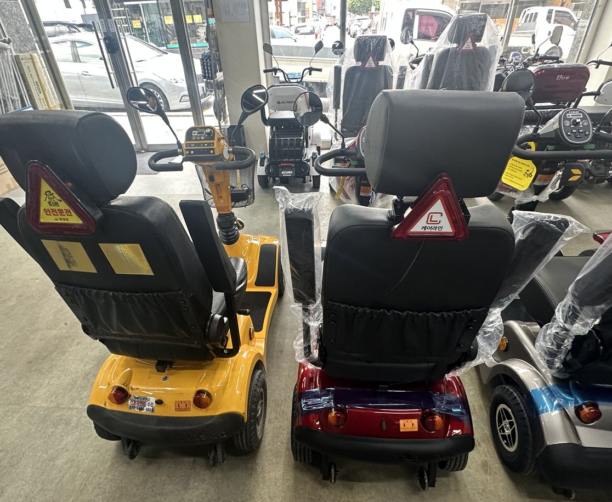
이제 골든타임 가드를 더 많은 어르신의 전동스쿠터에 달 차례다
- 다음 단계
- 에필로그
다음 실험에는 제조사와 연구기관, 지자체의 도움이 필요하다
골든타임 가드에 댐퍼를 달아 지금 팔리는 전동스쿠터에 붙이려면 제조사와 함께 설계해야 한다. 스마트레버지킴이를 만들려면 어르신이 레버를 얼마나 빨리 당겨야 오조작인지 가려내는 기준이 먼저 있어야 한다. 어느 장치든 어르신들이 실제로 타면서 시험할 곳도 필요하다.
그래서 지금까지 모은 기록을 이 일을 해낼 수 있는 분들에게 전하려고 한다. 제조사, 연구기관, 지자체, 복지기관과 함께하고 싶다.
댐퍼를 단 골든타임 가드를 함께 설계하고, 지금 팔리는 전동스쿠터에 붙여 시험할 곳
어르신이 레버를 얼마나 빨리, 얼마나 세게 잡으면 오조작인지 가려내는 기준을 함께 만들 곳
전동스쿠터를 타는 어르신들이 장치를 직접 달고 타 보는 실증 시험을 함께할 곳
협력 및 제안 문의
timehor@naver.com"이거 있으니까 손이 덜 나가."
골든타임 가드를 몇 주째 달고 다닌 어르신몇 주 뒤 전화해 보니, 한 어르신은 여전히 골든타임 가드를 달고 다니고 있었다
골든타임 가드를 달아 드리면서 며칠만 써 보시라고 했는데, 몇 주 뒤 전화를 드려 보니 어르신은 시제품을 그대로 달고 다녔다.
처음 의성에 올 때 우리는 이곳을 소멸, 고령화, 지방 불균형 같은 말로만 알았다. 2개월을 살아 보니 어르신들은 복지관에서 같이 밥을 먹고, 여름이면 그늘에 모여 수박을 나눠 먹으며 하루를 보내고 있었다. 장에 가는 전동스쿠터 바구니에는 장바구니와 반찬통이 실려 있었고, 살 것이 많다며 안동 중앙시장까지 나가는 어르신도 있었다.
도동3리 마을회관 분들과는 처음 만났을 때 서로 어색했다. 마을회관 청소와 풀 뽑기를 함께하면서 가까워졌고, 나중에는 연구를 가장 많이 도와주었다. 전동스쿠터를 타는 세 분과는 심층 인터뷰를 했고, 시제품 시험도 마을회관 앞에서 했다. 의성을 떠나기 전에 "도동3리 사랑해요"라고 쓴 케이크를 선물로 드렸다.
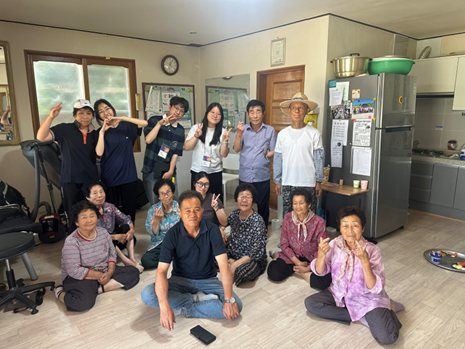
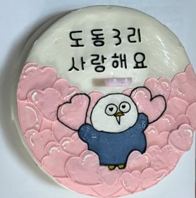
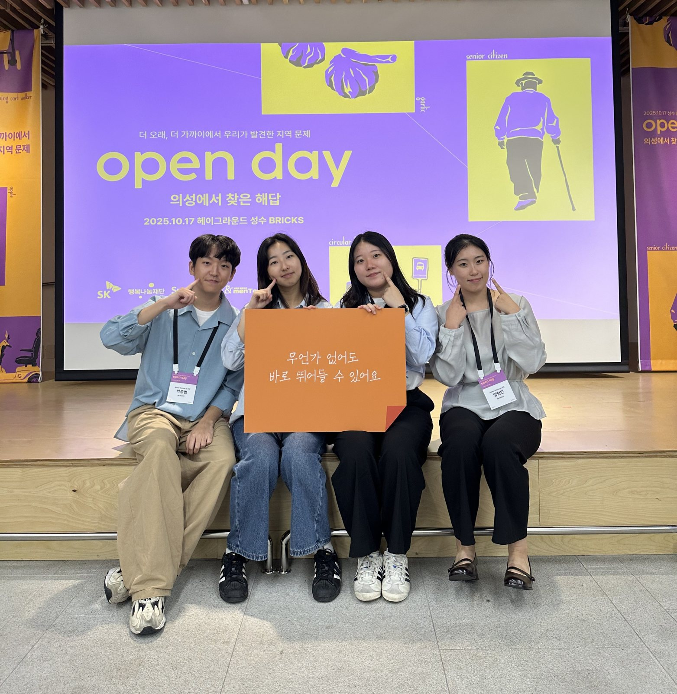
팀 RE:MOVE는 2025년 여름 의성에서 2개월 동안 살며 어르신 49명을 인터뷰하고 관계자 인터뷰를 22번 했다. 그 뒤 2026년 5월까지 후속 연구를 이어 갔다. 지금은 댐퍼를 단 골든타임 가드를 제조사, 지자체와 함께 실증할 방법을 찾고 있다.
도움을 주신 분들
도동3리 마을회관 부녀회장님, 이장님, 노인회장님, 총무님과 김옥자, 이순자, 김태선 할머니, 의성노인복지관, 의성군종합자원봉사센터, 국민건강보험공단, 단촌면, 의성경찰서, 의성제일렉카, 노원구 전동보장구 운전연습장과 퍼스트케어, 관악구 전동보장구 운전연습장, 케어메디칼, 서울시동북보조기기센터, 의성군청 민원과 대중교통팀, 의성전통시장 상인회, 안동종합보청기의료기, 메디카, 성광종합의료기, 한독의료기, 현대의료기, 선비의료기, 군위종합의료기, 안계오토바이의료기, 금성노인복지관, 안계노인복지관, 경북장애인종합복지관 의성분관, 의성119안전센터, 의성지구대, 가음면과 안계면 보건지소, 의성읍과 가음면과 춘산면과 안계면의 경로당과 마을회관 어르신들, 의왕시 메이커스페이스, 별따러가자 김경목 대표님, 유튜버 대충라이프(LG전자 연구위원)님, 기계공학과 학부생들, 그리고 이야기를 들려주신 의성의 모든 어르신께 감사드린다.